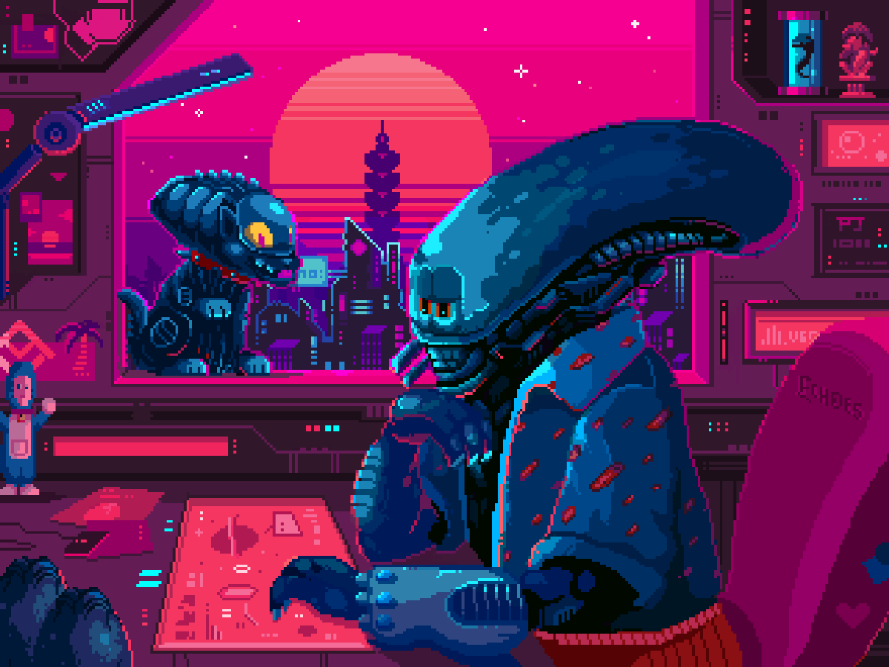

Lab 2 - HTML & CSS Starter
Hello World
My name is Jonathan and my partner is Ryan. We are third year agpm majors and both have some experience with coding. Ryan likes playing Overwatch 2 and I like playing Rainbow Six Siege. My favorite character in Rainbow Six Siege is Solis and Ryans favorite character in Overwatch is Symmetra.

Challenge
The challenge of the lab is to create an HTML file and style it with a linked css file. The file is supposed to produce a webpage that introduces us as a team and is customized in anyway that we saw fit through the css file.
Problems
The HTML part of the lab was pretty simple and we got through it pretty quickly. We ran into some problemds in the CSS part when we did not know how to style certain parts of the file. We solved it by googling how to edit it, for example we had to search up how to format the border so it would surround the entire page.
Reflection
This lab was not too difficult. There were some hiccups here and there but ultimately they were easy to get through. When it came to the energy we put in, we wanted to make sure that the format of the webape looked nice and flowed well. We also wanted to create a sort of aesthetic through the picture, fonts, and colors that we used.
Results
We succeeded in making a well decorated and easy to understand webpage and successfully integrated the css file with the HTML file.